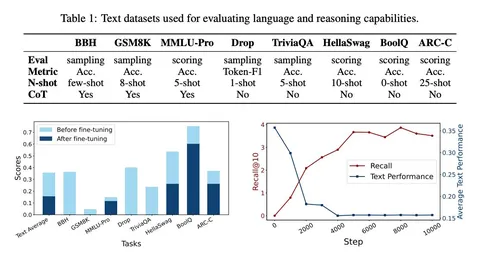
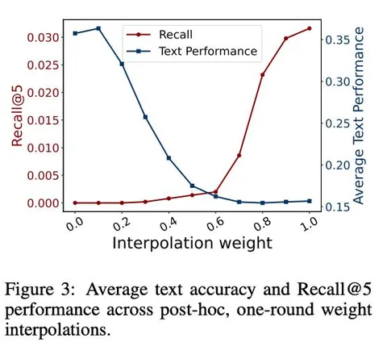
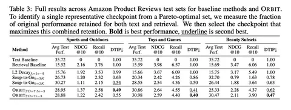

ORBIT — ещё одна статья на стыке LLM и Recsys. Исследование провели на сравнительно небольших моделях (Gemma3-1B) и датасете Amazon, где основное внимание уделяется дообучению LLM для рекомендаций и сохранению языковых способностей исходной модели.
Авторы действуют из установки, что об LLM нам известна только сама instruction-tuned-модель, без доступа к данным обучения. Цель — адаптировать модель к рекомендательной задаче. Однако при дообучении возникает catastrophic forgetting, когда качество решения общих языковых задач и задач на рассуждение резко снижается.
Один из возможных подходов — подмешивать текстовые данные при дообучении. Однако исходные они могут быть недоступны, а также это дорого по ресурсам.
Альтернативой может стать model merging — объединение моделей в пространстве весов. В этом случае не требуется дополнительное обучение модели, но, оказывается, классический model merging после обучения не обобщается. Поэтому авторы переходят к model merging во время файнтюнинга.
Цель работы — предложить легковесный способ адаптировать модель к рекомендациям и не сильно потерять исходные языковые способности LLM.
В основных экспериментах используют decoder-only Gemma3-1B-IT. Модель дообучают предсказывать SID следующего айтема по истории пользователя.
Авторы приводят несколько наблюдений.
Деградация при обычном файнтюнинге на задачу рекомендаций. Качество модели на текстовых бенчмарках резко снижается до уровней, сопоставимых со случайным выбором ответа или предсказанием самого частого класса.
Скорость забывания. Забывание происходит уже на ранних этапах обучения. Старые знания практически теряются уже через 20% датасета, тогда как качество рекомендаций в целом растёт.
Model Merging после обучения. Метрики рекомендательной задачи только начинают расти, а почти все текстовые знания LLM уже потеряны.
Предлагают два изменения:
1. Во время обучения контролировать отклонение модели от исходного состояния. Для этого рассматривают две меры: L2-расстояние между параметрами модели и Sign Dissimilarity (SD) — долю соответствующих параметров с несовпадающими знаками.
2. Сделать merging адаптивным. Объединяют модели, только когда дообученная сильно отличается от исходной. Текущие веса усредняются с фиксированными весами LLM с равными коэффициентами. Операция повторяется до выполнения ограничения. Добавившиеся веса SID словаря не трогают.
Особое внимание уделяют SD — доле параметров, у которых изменился знак относительно исходной модели. Авторы интерпретируют смену знака как индикатор существенного изменения параметра. SD оценивает долю таких параметров, тогда как L2-расстояние отражает совокупную величину изменения весов. Причём именно SD позволяет добиться более универсальной модели. А в качестве метрики сравнения различных подходов авторы выбирают DTIP — расстояние до идеальной точки (1, 1) после min-max-нормализации текстовых метрик и Recall относительно baseline-моделей.
Основные результаты подхода:
• Лучшие конфигурации ORBIT дают лучший баланс между текстовыми и рекомендательными метриками по DTIP в сравнении с baseline-методами.
• Использование SD для определения момента объединения весов даёт лучший баланс качества, чем проверенные варианты ORBIT с L2-расстоянием.
• Интервалы между операциями merging действительно определяются адаптивно. Они сначала растут, а затем количество шагов между model merging стабилизируется.
• Применимость метода показали при масштабировании с Gemma3-1B-IT до Gemma3-4B-IT.
@RecSysChannel
Разбор подготовил


